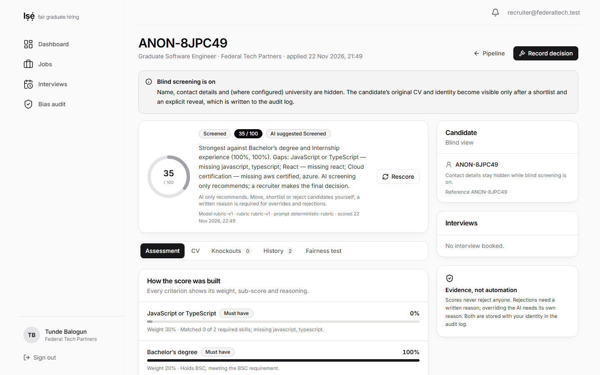
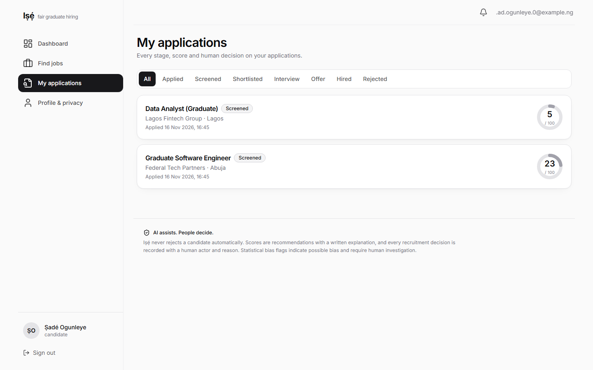

6.3 Evidence — the blind pipeline and the audit






Three observations follow directly from these screens. First, the blinding is real at the transport layer: the pipeline payload for Figure 6.10 contains no identity fields, which is why the board renders references and evidence only. Second, the audit produces findings on data it was not tuned to: the age-band and geopolitical-region flags in Figure 6.11 were not anticipated when the seed data was written, and the institution-type flag appears because state universities and polytechnics are frequented by different populations in the generated dataset — exactly the proxy the literature warns about. Third, the "not enough data" paths behave as designed rather than failing: twelve group rows in that report are suppressed, and the report says so instead of presenting rates computed from two people.
The candidate view in Figure 6.13 is the part most likely to be uncomfortable to a product team: a candidate is shown a score of 5 out of 100. It is shown because the alternative — a silent rejection with no explanation — is the practice the platform exists to replace, and because the NDPA gives the candidate the right to contest it.
Validity of the rubric. The scorer measures the presence and relevance of evidence, not the quality of a candidate. A well-specified rubric applied consistently produces reproducible rankings; whether those rankings predict performance in the role is an empirical question this project does not answer. A real deployment would need a criterion-validity study against hiring outcomes.
Synthetic evaluation data. All 300 applications are generated. The audit results prove the machinery computes what it claims to compute; they say nothing about the fairness of the platform on a real applicant pool, where declaration rates, group sizes and CV formats differ substantially.
Parsing quality. Structured parsing is heuristic. Unusual layouts, tables, graphics-heavy templates and scanned images (which need OCR, not text extraction) will degrade the parse, and a degraded parse lowers the score. This interacts with class: candidates with professionally formatted CVs are advantaged by a parser in the same way they were advantaged by a human reader. The mitigation available in this version is transparency — the candidate can see the extracted facts — not correction.
Legal compliance. The privacy notice, consent capture, encryption, suppression threshold and subject-rights flows are implemented to NDPA 2023 principles, but the project is not certified and the interface says so on every page.
Security review — what is enforced, and where.
| Control | Implementation |
|---|---|
| Credential storage | bcrypt, cost 10, Node runtime only; hashes never returned by any function |
| Session storage | SHA-256 hash of a 48-byte random token, with expiry and revocation timestamp |
| Authorisation | Token resolved per call; role and organisation scope checked before every read and write |
| File access | Signed upload URLs; file reads mediated by a query that checks application access |
| Sensitive fields | AES-256-GCM with a per-record IV and authentication tag; key from the deployment environment |
| Error surface | Generic messages for authentication failures; no user enumeration through login |
| Transport | HTTPS to both platforms; no mixed content; no third-party script on any page |
Table 6.3 — Security controls and their implementation
Two residual risks are stated rather than mitigated. The session token is kept in local storage, which makes it readable by any script executing on the origin; a strict Content-Security-Policy limits that exposure but does not remove it, and an httpOnly cookie would be the stronger design for a same-origin deployment. And the deployment secrets are held by the platform: anyone with access to the Convex project can read the encryption key, which is an inherent property of server-held keys and the reason the declarations are sealed rather than merely access-controlled.